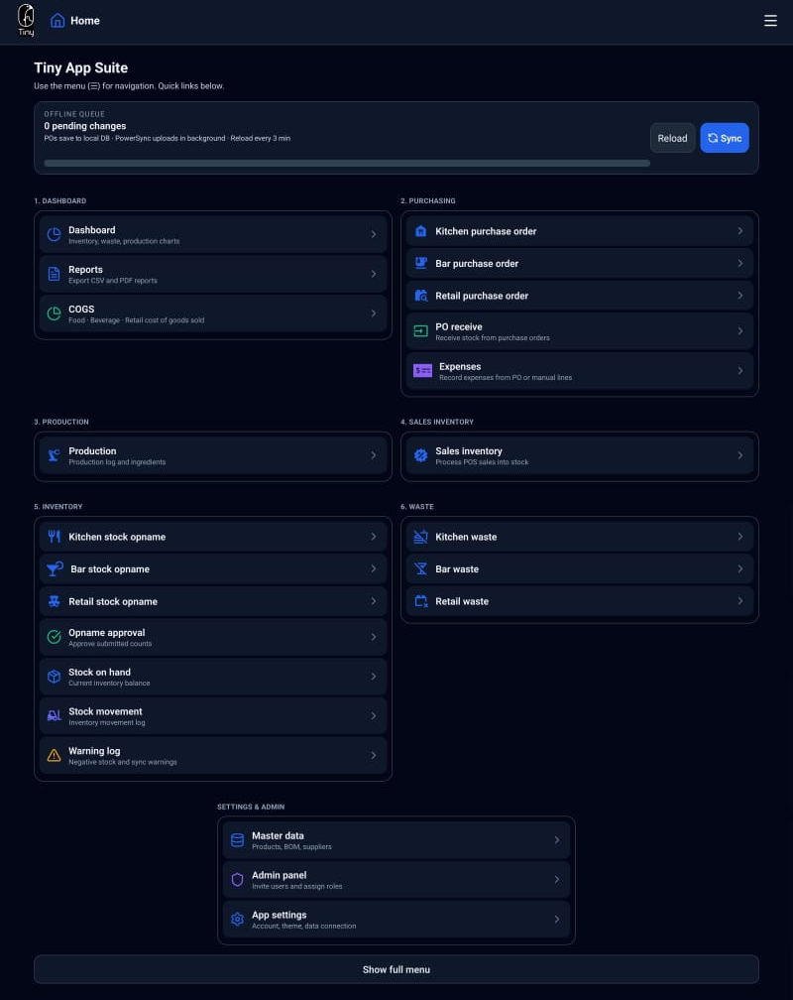
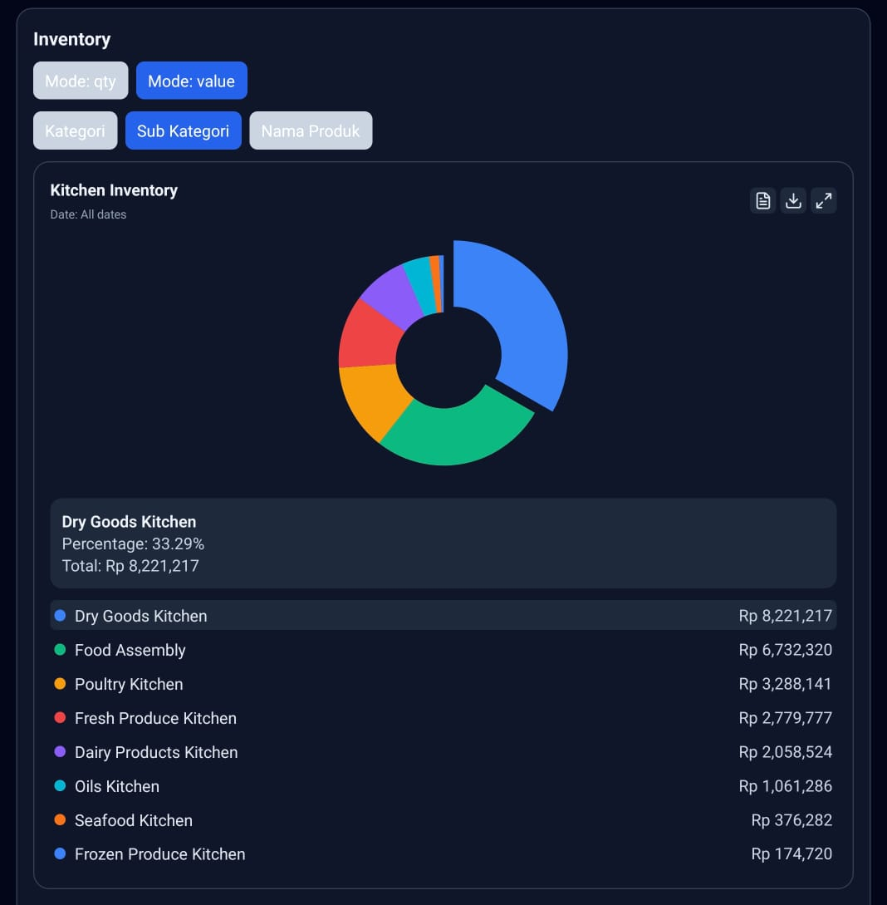
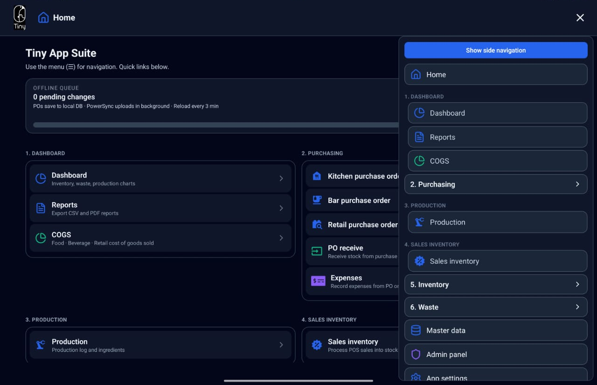
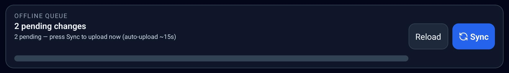
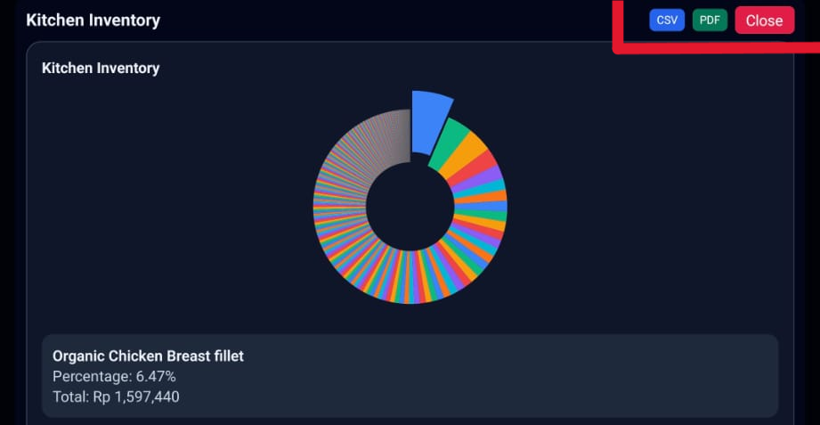

Saves Hours & Headaches
Automate the tedious manual work. Streamline kitchen ordering, reduce administrative steps, and eliminate purchasing friction for your teams.
The Tiny Back Office App
Your pocket manager for zero-waste, high-profit kitchens.
Used by scaling hospitality venues and cafes.
Manage Costs and Increase Efficiency
Costs: 40%
Revenue: 60%

Benefits
Automate tedious back-office work so your team can focus on food, guests, and margin — not spreadsheets.
Automate the tedious manual work. Streamline kitchen ordering, reduce administrative steps, and eliminate purchasing friction for your teams.
Real-time trackable daily budgets. Empower your kitchen team to manage costing on the fly, stopping over-ordering before it happens to drastically lower your COGS.
Real-time production and sales syncing. Finished recipes and daily sales automatically cut ingredient products from your stock counts so your inventory is always accurate.
“Join the next generation of kitchens switching to automated back-office management.”
Your recipe for clarity
See budgets, production, and inventory in one tablet-first hub — designed for real kitchen heat.
Contact Sales
Live kitchen budgets and inventory at a glance
Why Tiny Back Office?
No, but it’s the match your kitchen team has been waiting for.
Many venues spend hours going through multiple tedious steps from writing manual orders, creating purchase orders, cross-checking recipes, and guessing stock levels. This takes a lot of time and is prone to human error. Tiny Back Office is your digital kitchen hand that never misses a cost, calculates your COGS automatically, and keeps your operational sanity intact.
“We track the cents, so you can make the dollars.”
Tiny Back Office is built tablet-first with a sleek dark UI designed to handle the heat of real-time kitchen operations. It bridges the gap between what you buy, what you prep, and what you sell. By automatically reducing ingredient inventory the moment a sale or production run is logged, you eliminate the guesswork and stop bleeding money on wasted prep.

Every module one tap away on the floor
Key modules
Simple modules that replace paper workflows: plan production, buy smarter, and keep inventory accurate automatically.
| Module | What it does | Best feature |
|---|---|---|
| Smart Purchasing | Sectioned POs (Kitchen, Bar, Retail) with built-in monthly budget caps. | Barcode scanning (tablet): order/receive in seconds—less back-and-forth. |
| Production Planning | Tell the app how much you would like to produce, and it calculates the quantity needed for each ingredient from your Recipes. | Consistent taste: ditch paper checklists, prep the right amounts every time—minimize waste. |
| Automatic Ingredient Depletion | When production is completed and sales are logged, ingredient products are reduced from stock automatically. | Always accurate: stop over-ordering and over-prepping before it happens. |
| Sales & COGS Hub | Manager dashboard with instant Food & Beverage profit-margin calculations. | One-tap sync: process daily POS sales directly into costing. |
| Waste & Loss Logging | Capture waste on the floor with quick reasons, so costs never disappear into “mystery losses”. | Instant impact: updates stock and COGS the moment it’s recorded. |
| Rapid Stock Adjustments | Seamless physical counts per section. | Approve/reject flow: staff counts, managers approve. Zero data errors. |
| Fast Master Data | Mass-upload and edit items, recipes, and shelf-life rules so managers can keep the system clean. | Manager control: update setup in real time—without breaking the workflow. |
Always synced
The central nervous system of your cafe operations. Everything your team logs on the floor updates the admin hub in real time. Items, recipes, and custom shelf-lives can be mass-uploaded or edited by managers instantly.

Push and pull data without leaving the floor
Margin intelligence
Export charts, drill into inventory by section, and tie daily sales back to ingredient depletion — so food cost stops being a mystery at month-end.

Get started
Tiny Back Office is a simple solution to a BIG problem. We can show you exactly how the app streamlines ordering, tracks budgets, and automates your inventory in a quick 20-minute online demo.
If you choose to implement the system, we offer full onboarding for your managers and staff, alongside dedicated after-sales support. This will be the simplest, most profitable improvement you’ll ever make to your venue's operations.